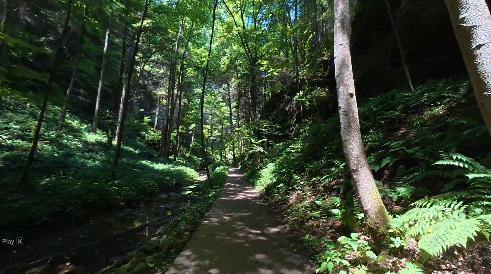

A Gocation Life destination
Conkle's Hollow
State Nature Preserve
Rockbridge · Hocking Hills, Ohio
A cool, peaceful gorge walk beneath towering sandstone cliffs.

The place & its story
A little history
Conkle's Hollow protects a narrow gorge in Ohio's Hocking Hills. Black Hand sandstone cliffs rise nearly 200 feet above the valley floor, with different habitats in the cool gorge and along the rim.
Ohio purchased the hollow in 1925 to preserve its scenery. It was dedicated as a state nature preserve in 1977.
History source: Ohio Department of Natural Resources
Gocation Life
Our Visit
We were looking for a peaceful walk with trees, a creek, and a mostly flat grade. We chose the easier Lower Gorge Trail.
The cool shade and towering cliff faces were what stood out to us. The walk gave us a memorable Hocking Hills outing without taking on the rim route.
Come along with Mike and Sherry in our morning-walk video below.
Come along with us
Watch our Conkle's Hollow visit
Verified as a Gocation Life upload.
A reason to come back
Ideas for a return visit
Slow down in the gorge
Return for another Lower Gorge walk, taking time to notice the creek, sandstone, and changing woodland scenery from the designated trail.
Consider the rim
The Rim Trail offers a different view above the gorge. Check the current trail map and conditions, and consider the climbs and cliff edges before choosing this route.
Suggestions for next time, based on ODNR's preserve guide; our documented visit was to the Lower Gorge.
Travel meets vintage
ATWW ideas nearby
Hocking Hills Antique Mall
At Hocking Hills Market
Rockbridge, Ohio · along Route 33
A possible Along the Whimsy Way stop for antiques and vintage browsing on another part of your Hocking Hills day.
Shop information & hours ↗Location verified through Hocking Hills Market and the shop's website.
Logan Antique Mall
12795 State Route 664 S.
Logan, OH 43138
Another regional option for antiques and collectibles, including glassware, books, furniture, and quilts. Check current hours before driving over.
Visitor listing & contact details ↗Verified opportunities for a future vintage outing; neither shop is documented as part of our Conkle's Hollow visit.
Explore Along the Whimsy Way ↗Before you go
Plan a visit
Find Conkle's Hollow
24858 Big Pine Road
Rockbridge, OH 43149
Address: ODNR's Conkles Hollow event listing.
Choose your trail
The Gorge Trail follows the valley floor and is partly paved; its final natural-surface stretch includes steps and narrow spaces. The rim route climbs above the gorge. Check the official map and access information for your needs.
Official Gorge Trail access details ↗Hours & preserve rules
ODNR lists opening from half an hour before sunrise until half an hour after sunset. Stay on designated trails; pets are not permitted.
Check before setting out
Confirm trail conditions, closures, and access needs directly with ODNR. Follow posted signs and use the current trail map when planning your walk.
Official visitor information ↗Visitor details and linked sources checked October 26, 2026.